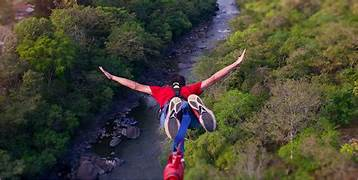
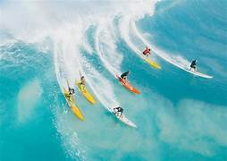
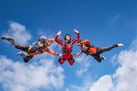

los 3 mas conocidos
- Salto en BungeeTambién conocido como Bungee Jumping, es uno de los primeros deportes extremos en practicarse

- SurfEste deporte se practica en el mar y consiste en tratar de dominar las olas, valiéndose de una “tabla de surf”.

- ParacaidismoEste es uno de los deportes extremos más populares. Consiste en arrojarse desde un avión, a una altura considerable y, después de caer una determinada cantidad de metros, abrir el paracaídas, que ayuda a que la caída sea lenta y segura.
